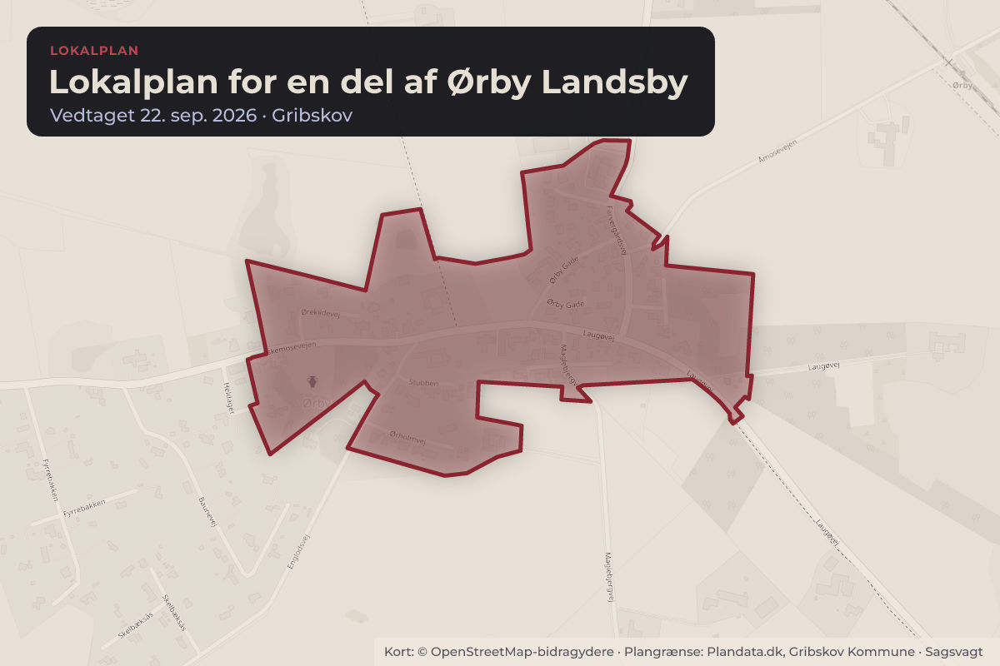
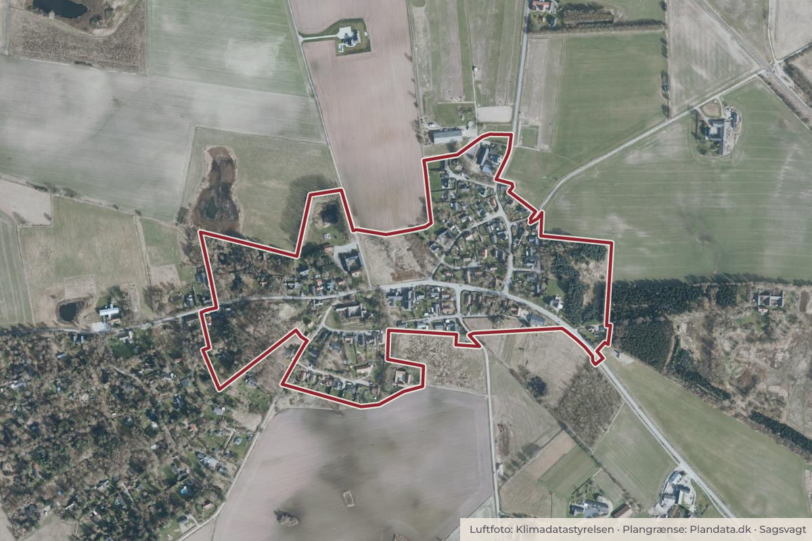

Besluttet 22. september, Plan, Miljø og Klimaudvalget, Gribskov
Endelig vedtagelse af Lokalplan nr. 556.02 for en del af Ørby Landsby
ADMINISTRATIONEN INDSTILLER TIL PLAN-, MILJØ- OG KLIMAUDVALGET AT BESLUTTE: 1. at endeligt vedtage Lokalplan 556.02 for en del af Ørby Landsby med de ændringer og præciseringer, der fremgår af sagsfremstillingen og den vedlagte hvidbog. 2. at endeligt ophæve den del af lokalplanområdet på matr.nr. 4a, Ørby by, Vejby, som er omfattet af Lokalplan 556.01.

Kort: © OpenStreetMap-bidragydere. Plangrænse: Plandata.dk, Gribskov Kommune.

Har du et billede fra Lokalplan for en del af Ørby Landsby? Send det til os
Kort fortalt
- Forslaget
- Endeligt vedtage Lokalplan 556.02 for en del af Ørby Landsby med de ændringer
- Endeligt ophæve den del af lokalplanområdet på matr.nr. 4a, Ørby by, Vejby, som
- Hvem
- Plan, Miljø og Klimaudvalget, Gribskov Kommune
- Hvornår
- Tirsdag 22. september 2026
- Status
- Besluttet. 1.-2. Godkendt.
Læs hele sagen Kommunens egen tekst
Indstilling
ADMINISTRATIONEN INDSTILLER TIL PLAN-, MILJØ- OG KLIMAUDVALGET AT
BESLUTTE:
1. at endeligt vedtage Lokalplan 556.02 for en del af Ørby Landsby med de ændringer
og præciseringer, der fremgår af sagsfremstillingen og den vedlagte hvidbog.
2. at endeligt ophæve den del af lokalplanområdet på matr.nr. 4a, Ørby by, Vejby, som
er omfattet af Lokalplan 556.01.
Sagsfremstilling
Baggrund og proces
Planudvalget besluttede den 23. september 2025 at igangsætte en revision af en del af den
gældende Lokalplan 556.01 for Ørby Landsby. Det planmæssige grundlag omfattede
muliggørelse af et nyt rækkehusbyggeri på Ørby Gade 3 samt en opdatering af den
eksisterende lokalplan med fokus på bevaringsværdige ejendomme, beplantning og
muligheder for opsætning af solceller.
Som led i den tidlige inddragelse blev der gennemført en 8 ugers forhøring og afholdt
dialogmøde den 12. januar 2026. På baggrund af forhøringen traf Plan-, Miljø- og
Klimaudvalget den 24. februar 2026 beslutning om det videre grundlag for planlægningen af
Ørby Gade 3. Der blev herefter arbejdet videre med en løsning med maksimalt 12 boliger, en
grøn kile gennem området og et samlet maksimalt etageareal på 1.350 m². Den 2. juni 2026
godkendte Plan, Miljø og Klimaudvalget forslag til Lokalplan 556.02 til udsendelse i 8 ugers
offentlig høring samt igangsættelse af processen for ophævelse af en del af Lokalplan 556.01
på matr.nr. 4a.
Lokalplanens indhold og formål
Lokalplan 556.02 fastlægger rammerne for både den eksisterende landsby og udviklingen på
Ørby Gade 3. Planen skal sikre, at ny bebyggelse kan indpasses i landsbyens struktur og
skala, samtidig med at landsbyens kulturhistoriske, landskabelige og grønne kvaliteter
understøttes.
På Ørby Gade 3 giver lokalplanen mulighed for op til 12 boliger i fire rækkehuslænger. Der
stilles krav til blandt andet bebyggelsens placering, omfang, udformning og materialer.
Samtidig sikres en grøn kile, faunapassage, eksisterende vådområder og bevaringsværdige
træer.
Illustrationsplan af rækkehusbebyggelse på Ørby Gade 3
Revisionen af lokalplanen bygger desuden på en SAVE-registrering af bygninger opført før
1960 og en ny registrering af bevaringsværdig beplantning. Bestemmelserne om
bevaringsværdige bygninger og træer, skiltning, grønne tage og solceller er samtidig opdateret
og præciseret.
Offentlig høring
Forslag til Lokalplan 556.02 og forslag om ophævelse af en del af Lokalplan 556.01 har været i
offentlig høring i 8 uger. Der blev desuden afholdt borgermøde i høringsperioden.
Der er modtaget 37 høringssvar. Alle høringssvar og administrationens bemærkninger fremgår
af den vedlagte hvidbog.
Høringssvarene vedrører:
omfanget og udformningen af boligbebyggelsen på Ørby Gade 3 og ønsket om at
fastholde den tidligere planlægning med færre boliger
landsbyens kulturhistoriske, landskabelige og arkitektoniske værdier
biodiversitet, bilag IV-arter, faunapassage og naturforhold på Ørby Gade 3
bevaringsværdig beplantning, herunder særligt den store bævreasp på Ørby Gade 3
trafik, vejforhold samt håndtering af spildevand og regnvand
En række høringsparter tilkendegiver støtte til Ørby Bylaugs høringssvar, som fremgår som
første høringssvar i hvidbogen.
Administrationens vurdering og ændringer på baggrund af høringen
Administrationen vurderer ikke, at høringen giver anledning til at ændre lokalplanens
hovedprincipper. Det anbefales derfor at fastholde muligheden for op til 12 boliger på Ørby
Gade 3.
Administrationen vurderer fortsat, at boligudbygningen kan indpasses i landsbyens struktur og
skala, samtidig med at væsentlige kulturhistoriske, landskabelige og naturmæssige hensyn
sikres gennem lokalplanens bestemmelser.
Høringen giver dog anledning til enkelte ændringer og præciseringer:
§ 8.8 suppleres med en generel bestemmelse om, at bevaringsværdig beplantning skal
sikres bevaret både ved projektering og under udførelse af bygge- og anlægsarbejder.
Hermed sikres blandt andet beskyttelsen af den store bevaringsværdige bævreasp på
Ørby Gade 3.
To birketræer på Ørby Gade 8 udgår af udpegningen som bevaringsværdige på
baggrund af oplysninger om træernes tilstand. Bilag og kort konsekvensrettes.
Bilag 3 suppleres med et udpegningsskema for det bevaringsværdige beplantningsbælte
ved Askemosevejen 10, så grundlaget for udpegningen fremgår tydeligere.
§ 8.5 og § 13.2 suppleres med krav om, at der inden for faunapassagen etableres stenog grenbunker af en størrelse og opbygning, der forbedrer områdets kvalitet som rasteog overvintringssted for padder.
SAVE-registreringen for Ørby Gade 7 er genvurderet efter ejers bemærkninger omkring
ombygninger og ændringer bygningen. Originalitetsværdien ændres fra 5-6 og den
samlede bevaringsværdi ændres fra 4 til 5. Ændringen medfører ikke ændringer i den
planmæssige regulering af ejendommen.
Henvisningen til Charlotte Pia Aller som lokal sparringspart i forbindelse med
registreringen af bevaringsværdig beplantning fjernes fra lokalplanen og
udpegningsskemaerne. Dette ændrer ikke den faglige registrering eller udpegningen af
beplantningen.
Der foretages desuden mindre sproglige og redaktionelle rettelser i lokalplanen, som ikke
ændrer planens indhold eller bestemmelsernes betydning.
De enkelte høringssvar og administrationens vurderinger er nærmere beskrevet i hvidbogen.
Administrationen vurderer ikke, at ændringerne ændrer lokalplanens grundlæggende
principper, og dermed at ændringer ikke kræver en fornyet offentlig høring.
Ophævelse af en del af Lokalplan 556.01
I Lokalplan 556.01 indgår et mindre markareal i landzone på matr.nr. 4a, Ørby by, Vejby.
Arealet blev oprindeligt medtaget med henblik på at ændre zonestatus fra sommerhusområde
til landzone. Arealet indgår ikke i de forhold, som revisionen af lokalplanen omfatter. Som
beskrevet ved godkendelsen af lokalplanforslaget kan en fortsat lokalplanlægning af arealet
desuden medføre utilsigtede begrænsninger for omkringliggende naboejendomme i relation til
husdyrbrug.
Forslaget om ophævelse har været i offentlig høring parallelt med Lokalplan 556.02.
Administrationen anbefaler, at ophævelsen gennemføres som forudsat.
Miljøscreening og klage
Der er gennemført en miljøscreening af forslag til Lokalplan 556.02 og ophævelsen af en del af
lokalplanområdet på matr.nr. 4a i Lokalplan 556.01. Screeningen omfatter blandt andet
biodiversitet og bilag IV-arter, landskab, kulturmiljø, vandforhold, trafik og klima. Gribskov
Kommune har på baggrund af screeningen truffet afgørelse om, at planlægningen ikke
forventes at få væsentlig indvirkning på miljøet, og at der derfor ikke skal udarbejdes en
miljørapport.
Høringssvarene giver efter administrationens vurdering ikke anledning til at ændre
miljøscreeningens konklusion.
Screeningsafgørelsen er påklaget til Planklagenævnet. Planklagenævnet modtog klagen den
16. juli 2026, og Sekretariatet for Planklagenævnet modtog den 25. august 2026 klagerens
uddybende klage med tilhørende bilag. Nævnenes Hus har oplyst, at sagen forventes
færdigbehandlet inden udgangen af maj 2027.
Klagen har ikke i sig selv opsættende virkning og er derfor ikke til hinder for, at Lokalplan
556.02 kan vedtages endeligt. Administrationen anbefaler på den baggrund, at lokalplanen
vedtages endeligt, mens klagesagen verserer.
Økonomi
Ressourceforbrug i form af arbejdstid for kommunens ansatte og afholdelse af
borgermøde finansieres af Økonomiudvalgets samt Teknisk udvalg og Plan, Miljø og
Klimaudvalgets samlede budgetter.
Lovgrundlag
Planloven (LBK nr. 572 af 29/05/2024).
Lov om miljøvurdering af planer og programmer og af konkrete projekter (VVM) (LBK nr. 4 af
03/01/2023). Kommuneplan 2025-37 for Gribskov Kommune.
Museumsloven (LBK nr. 1017 af 07/07/2025).
Høringsperiode og høringsparter
Forslag til Lokalplan 556.02 har været offentliggjort i 8 ugers offentlig høring. Forslaget har
været tilgængeligt digitalt og er sendt til berørte grundejere, foreninger, myndigheder og øvrige
relevante høringsparter.
Der er modtaget 37 høringssvar, som fremgår af den vedlagte hvidbog.
Sammenhæng med kommunens politikker og strategier
Lokalplanen understøtter Gribskov Kommunes udviklingspolitik ved at bidrage til et mangfoldigt
boligudbud i Ørby Landsby med plads til fællesskab samt til bevarelsen af landsbyens særlige
kulturmiljø og grønne karakter. Derudover medvirker lokalplanen til at realisere
målsætningerne i både Udviklingspolitikken og Klimaplanen ved at fremme vedvarende
energiforsyning og understøtte klimatilpasning gennem lokal regnvandshåndtering med både
rekreativ og naturmæssig værdi.
Beslutning
1.-2. Godkendt.
Kilde: Gribskov Kommune, Plan, Miljø og Klimaudvalget, referat fra mødet tirsdag 22. september 2026, punkt 2. Læs den originale sag hos kommunen.